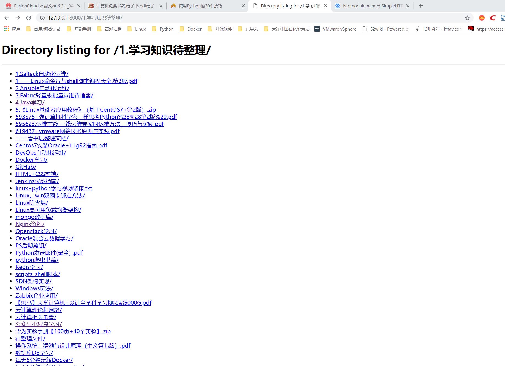
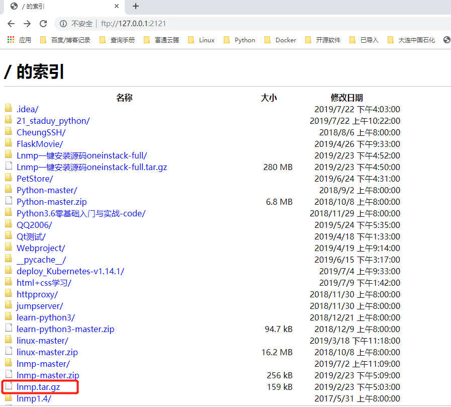
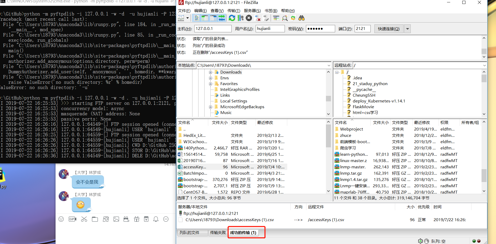

<!DOCTYPE html>
<!--[if IE 8]><html class="no-js lt-ie9" lang="en" > <![endif]-->
<!--[if gt IE 8]><!--> <html class="no-js" lang="en" > <!--<![endif]-->
<head>
  <meta charset="utf-8">
  
  <meta name="viewport" content="width=device-width, initial-scale=1.0">
  
  <title>2.21. 用 Python 快速实现 HTTP 和 FTP 服务器 &mdash; 系统化的学习Linux、Shell、Devops运维开发</title>
  

  
  
  
  

  
  <script type="text/javascript" src="../../_static/js/modernizr.min.js"></script>
  
    
      <script type="text/javascript">
          var DOCUMENTATION_OPTIONS = {
              URL_ROOT:'../../',
              VERSION:'1.0.0',
              LANGUAGE:'None',
              COLLAPSE_INDEX:false,
              FILE_SUFFIX:'.html',
              HAS_SOURCE:  true,
              SOURCELINK_SUFFIX: ''
          };
      </script>
        <script type="text/javascript" src="../../_static/jquery.js"></script>
        <script type="text/javascript" src="../../_static/underscore.js"></script>
        <script type="text/javascript" src="../../_static/doctools.js"></script>
        <script type="text/javascript" src="https://cdn.mathjax.org/mathjax/latest/MathJax.js?config=TeX-AMS-MML_HTMLorMML"></script>
    
    <script type="text/javascript" src="../../_static/js/theme.js"></script>

    

  
  <link rel="stylesheet" href="../../_static/css/theme.css" type="text/css" />
  <link rel="stylesheet" href="../../_static/pygments.css" type="text/css" />
    <link rel="next" title="2.22. nmtui图形配置网络服务" href="24.使用图形配置网络服务nmtui.html" />
    <link rel="prev" title="2.20. windows上搭建yum源站点" href="22.windows上搭建yum源站点.html" /> 
</head>

<body class="wy-body-for-nav">

   
  <div class="wy-grid-for-nav">
    
    <nav data-toggle="wy-nav-shift" class="wy-nav-side">
      <div class="wy-side-scroll">
        <div class="wy-side-nav-search" >
          

          
            <a href="../../index.html" class="icon icon-home"> 小健_Linux-shell-Devops_Blog
          

          
            
            
          
          </a>

          
            
            
              <div class="version">
                1.0
              </div>
            
          

          
<div role="search">
  <form id="rtd-search-form" class="wy-form" action="../../search.html" method="get">
    <input type="text" name="q" placeholder="Search docs" />
    <input type="hidden" name="check_keywords" value="yes" />
    <input type="hidden" name="area" value="default" />
  </form>
</div>

          
        </div>

        <div class="wy-menu wy-menu-vertical" data-spy="affix" role="navigation" aria-label="main navigation">
          
            
            
              
            
            
              <ul class="current">
<li class="toctree-l1"><a class="reference internal" href="../../DevOps_Study/index.html">DevOps与自动化运维</a></li>
<li class="toctree-l1"><a class="reference internal" href="../../Linux_Cluster_combat/index.html">高性能Linux服务构建实战</a></li>
<li class="toctree-l1 current"><a class="reference internal" href="../index.html">Linux_shell</a><ul class="current">
<li class="toctree-l2"><a class="reference internal" href="../01.常用较多命名查询/index.html">1. 常用较多命名查询</a></li>
<li class="toctree-l2 current"><a class="reference internal" href="index.html">2. Linux服务器架设</a><ul class="current">
<li class="toctree-l3"><a class="reference internal" href="0.1RPM红帽软件包管理.html">2.1. RPM软件包管理</a></li>
<li class="toctree-l3"><a class="reference internal" href="1.RAID与LVM磁盘阵列技术.html">2.2. RAID与LVM磁盘阵列</a></li>
<li class="toctree-l3"><a class="reference internal" href="2.NFS共享服务器搭建.html">2.3. NFS共享服务器搭建</a></li>
<li class="toctree-l3"><a class="reference internal" href="3.Vsftpd服务器搭建.html">2.4. vsftpd服务安装配置</a></li>
<li class="toctree-l3"><a class="reference internal" href="4.挂载硬盘mount命令.html">2.5. 挂载硬盘和分区</a></li>
<li class="toctree-l3"><a class="reference internal" href="5.Apache服务搭建.html">2.6. Apache服务源码搭建</a></li>
<li class="toctree-l3"><a class="reference internal" href="6.使用iSCSI服务部署网络存储.html">2.7. 使用iSCSI服务部署网络存储</a></li>
<li class="toctree-l3"><a class="reference internal" href="7.远程登录Linux系统.html">2.8. 远程登录Linux系统</a></li>
<li class="toctree-l3"><a class="reference internal" href="8.Samba服务器的搭建.html">2.9. Samba服务器搭建</a></li>
<li class="toctree-l3"><a class="reference internal" href="9.rsync数据同步.html">2.10. rsync数据同步</a></li>
<li class="toctree-l3"><a class="reference internal" href="10.iptables与firewalld防火墙.html">2.11. iptables与firewalld 防火墙</a></li>
<li class="toctree-l3"><a class="reference internal" href="11.Tomcat服务搭建配置.html">2.12. Tomcat服务搭建配置</a></li>
<li class="toctree-l3"><a class="reference internal" href="12.autofs自动挂载服务.html">2.13. autofs自动挂载服务</a></li>
<li class="toctree-l3"><a class="reference internal" href="13.使用Squid部署代理缓存服务.html">2.14. 使用Squid部署代理缓存服务</a></li>
<li class="toctree-l3"><a class="reference internal" href="14.Jenkins持续集成企业实战.html">2.15. Jenkins持续集成企业实战</a></li>
<li class="toctree-l3"><a class="reference internal" href="15.CentOS7安装xrdp(windows远程桌面连接linux).html">2.16. CentOS7安装xrdp(windows远程桌面连接linux)</a></li>
<li class="toctree-l3"><a class="reference internal" href="16.Haproxy负载均衡安装配置详解.html">2.17. Haproxy负载均衡安装配置详解</a></li>
<li class="toctree-l3"><a class="reference internal" href="20.国内常使用的yum源信息.html">2.18. 国内常使用的yum源信息</a></li>
<li class="toctree-l3"><a class="reference internal" href="21.Centos7安装VNC，手动网络重装VPS.html">2.19. Centos7安装VNC，手动网络重装VPS</a></li>
<li class="toctree-l3"><a class="reference internal" href="22.windows上搭建yum源站点.html">2.20. windows上搭建yum源站点</a></li>
<li class="toctree-l3 current"><a class="current reference internal" href="#">2.21. 用 Python 快速实现 HTTP 和 FTP 服务器</a><ul>
<li class="toctree-l4"><a class="reference internal" href="#python-http">2.21.1. 用 Python 快速实现 HTTP 服务器</a></li>
<li class="toctree-l4"><a class="reference internal" href="#python-ftp">2.21.2. 用 Python 快速实现 FTP 服务器</a></li>
</ul>
</li>
<li class="toctree-l3"><a class="reference internal" href="24.使用图形配置网络服务nmtui.html">2.22. nmtui图形配置网络服务</a></li>
<li class="toctree-l3"><a class="reference internal" href="25.Centos7中openssh升级到7.9p1.html">2.23. centos7.2 离线升级openssh7.9</a></li>
<li class="toctree-l3"><a class="reference internal" href="26.rabbitmq服务部署.html">2.24. rabbitmq服务部署</a></li>
<li class="toctree-l3"><a class="reference internal" href="27.Cobbler无人值守安装.html">2.25. Cobbler无人值守安装</a></li>
<li class="toctree-l3"><a class="reference internal" href="28.Linux运维工具Supervisor(进程管理工具).html">2.26. Linux运维工具Supervisor(进程管理工具)</a></li>
<li class="toctree-l3"><a class="reference internal" href="29.目前流行的开源监控框架.html">2.27. 目前流行的开源监控框架</a></li>
<li class="toctree-l3"><a class="reference internal" href="30.源码包制作成rpm包.html">2.28. 源码包制作成rpm包</a></li>
<li class="toctree-l3"><a class="reference internal" href="31.Yum自动下载RPM包及其所有依赖的包.html">2.29. Yum自动下载RPM包及其所有依赖的包</a></li>
<li class="toctree-l3"><a class="reference internal" href="32.基于Galera_Cluster多主结构的Mysql高可用集群.html">2.30. 基于Galera多主结构的Mysql高可用集群</a></li>
</ul>
</li>
<li class="toctree-l2"><a class="reference internal" href="../03.玩转shell脚本编程/index.html">3. 玩转shell脚本编程</a></li>
<li class="toctree-l2"><a class="reference internal" href="../04.玩转数据库（mysql、Redis）/index.html">4. 玩转数据库(mysql、Redis)</a></li>
<li class="toctree-l2"><a class="reference internal" href="../05.Nginx学习/index.html">5. Nginx学习</a></li>
<li class="toctree-l2"><a class="reference internal" href="../06.LAMP、LNMP学习/index.html">6. LNMP、LAMP学习</a></li>
<li class="toctree-l2"><a class="reference internal" href="../07.Zabbix监控企业实战/index.html">7. Zabbix监控企业实战</a></li>
<li class="toctree-l2"><a class="reference internal" href="../08.Linux构建高可用架构/index.html">8. 构建Linux高可用架构</a></li>
<li class="toctree-l2"><a class="reference internal" href="../09.Zabbix3.0从入门到精通/index.html">9. Zabbix3.0入门到精通</a></li>
<li class="toctree-l2"><a class="reference internal" href="../10.快速阅读Linux入门-阿铭Linux/index.html">10. 快速阅读Linux入门-阿铭Linux</a></li>
</ul>
</li>
<li class="toctree-l1"><a class="reference internal" href="../../Mysql/index.html">Mysql王者之路</a></li>
<li class="toctree-l1"><a class="reference internal" href="../../other/index.html">Other</a></li>
</ul>

            
          
        </div>
      </div>
    </nav>

    <section data-toggle="wy-nav-shift" class="wy-nav-content-wrap">

      
      <nav class="wy-nav-top" aria-label="top navigation">
        
          <i data-toggle="wy-nav-top" class="fa fa-bars"></i>
          <a href="../../index.html">小健_Linux-shell-Devops_Blog</a>
        
      </nav>


      <div class="wy-nav-content">
        
        <div class="rst-content">
        
          


<div role="navigation" aria-label="breadcrumbs navigation">

  <ul class="wy-breadcrumbs">
    
      <li><a href="../../index.html">Docs</a> &raquo;</li>
        
          <li><a href="../index.html">Linux_shell</a> &raquo;</li>
        
          <li><a href="index.html">2. Linux服务器架设</a> &raquo;</li>
        
      <li>2.21. 用 Python 快速实现 HTTP 和 FTP 服务器</li>
    
    
      <li class="wy-breadcrumbs-aside">
        
            
            <a href="../../_sources/Linux_shell/02.Linux服务器架设/23.用Python快速实现HTTP和FTP服务器.txt" rel="nofollow"> View page source</a>
          
        
      </li>
    
  </ul>

  
  <hr/>
</div>
          <div role="main" class="document" itemscope="itemscope" itemtype="http://schema.org/Article">
           <div itemprop="articleBody">
            
  <div class="contents topic" id="contents">
<p class="topic-title first">Contents</p>
<ul class="simple">
<li><a class="reference internal" href="#python-http-ftp" id="id1">用 Python 快速实现 HTTP 和 FTP 服务器</a><ul>
<li><a class="reference internal" href="#python-http" id="id2">用 Python 快速实现 HTTP 服务器</a><ul>
<li><a class="reference internal" href="#windows" id="id3">Windows上终止占用端口的进程</a></li>
</ul>
</li>
<li><a class="reference internal" href="#python-ftp" id="id4">用 Python 快速实现 FTP 服务器</a><ul>
<li><a class="reference internal" href="#ftp" id="id5">创建一个有认证可写的<code class="docutils literal"><span class="pre">ftp</span></code>服务器，可以使用类似以下指令</a></li>
</ul>
</li>
</ul>
</li>
</ul>
</div>
<div class="section" id="python-http-ftp">
<h1><a class="toc-backref" href="#id1">2.21. 用 Python 快速实现 HTTP 和 FTP 服务器</a><a class="headerlink" href="#python-http-ftp" title="Permalink to this headline">¶</a></h1>
<div class="section" id="python-http">
<h2><a class="toc-backref" href="#id2">2.21.1. 用 Python 快速实现 HTTP 服务器</a><a class="headerlink" href="#python-http" title="Permalink to this headline">¶</a></h2>
<div class="section" id="windows">
<h3><a class="toc-backref" href="#id3">Windows上终止占用端口的进程</a><a class="headerlink" href="#windows" title="Permalink to this headline">¶</a></h3>
<div class="highlight-default"><div class="highlight"><pre><span></span>C:\Users\18793&gt;netstat -ano|findstr 8000
  TCP    0.0.0.0:8000           0.0.0.0:0              LISTENING       15944
  UDP    0.0.0.0:8000           *:*                                    15944

C:\Users\18793&gt;tasklist | findstr 15944
KGService.exe                15944 Console                    1     20,584 K

C:\Users\18793&gt;taskkill /pid 15944 /F
成功: 已终止 PID 为 15944 的进程。
</pre></div>
</div>
<div class="highlight-default"><div class="highlight"><pre><span></span>Python 允许运行一个 HTTP 服务器来从根路径共享文件，下面是开启服务器的命令：

# Python 2
python -m SimpleHTTPServer


# Python 3
python3 -m http.server
</pre></div>
</div>
<p>SimpleHTTPServer 模块默认会在 8000 端口上监听一个 HTTP 服务，
这时就可以打开浏览器输入 <a class="reference external" href="http://IP:Port">http://IP:Port</a> 访问这个 Web 页面。
例如类似下面的 URL:</p>
<p></p>
</div>
</div>
<div class="section" id="python-ftp">
<h2><a class="toc-backref" href="#id4">2.21.2. 用 Python 快速实现 FTP 服务器</a><a class="headerlink" href="#python-ftp" title="Permalink to this headline">¶</a></h2>
<p>首先安装 Pyftpdlib 模块</p>
<div class="highlight-default"><div class="highlight"><pre><span></span>$ sudo pip install pyftpdlib
</pre></div>
</div>
<p><code class="docutils literal"><span class="pre">通过</span> <span class="pre">Python</span> <span class="pre">的</span> <span class="pre">-m</span> <span class="pre">选项将</span> <span class="pre">Pyftpdlib</span> <span class="pre">模块作为一个简单的独立服务器来运行</span></code></p>
<p>我们共享D盘的GitHub目录：</p>
<div class="highlight-default"><div class="highlight"><pre><span></span><span class="n">C</span><span class="p">:</span>\<span class="n">Users</span>\<span class="mi">18793</span><span class="o">&gt;</span><span class="n">d</span><span class="p">:</span>

<span class="n">D</span><span class="p">:</span>\<span class="o">&gt;</span>
<span class="n">D</span><span class="p">:</span>\<span class="o">&gt;</span><span class="n">cd</span> <span class="n">GitHub</span>

<span class="n">D</span><span class="p">:</span>\<span class="n">GitHub</span><span class="o">&gt;</span><span class="n">python</span> <span class="o">-</span><span class="n">m</span> <span class="n">pyftpdlib</span>
</pre></div>
</div>
<p>至此一个简单的 FTP 服务器已经搭建完成，访问 <a class="reference external" href="ftp://IP:PORT">ftp://IP:PORT</a> 即可。</p>
<div class="highlight-default"><div class="highlight"><pre><span></span>默认 IP 为本机所有可用 IP，端口为 2121。
默认登陆方式为匿名。
默认权限是只读。
</pre></div>
</div>
<p></p>
<div class="section" id="ftp">
<h3><a class="toc-backref" href="#id5">创建一个有认证可写的<code class="docutils literal"><span class="pre">ftp</span></code>服务器，可以使用类似以下指令</a><a class="headerlink" href="#ftp" title="Permalink to this headline">¶</a></h3>
<div class="highlight-default"><div class="highlight"><pre><span></span><span class="n">python</span> <span class="o">-</span><span class="n">m</span> <span class="n">pyftpdlib</span> <span class="o">-</span><span class="n">i</span> <span class="mf">127.0</span><span class="o">.</span><span class="mf">0.1</span> <span class="o">-</span><span class="n">w</span> <span class="o">-</span><span class="n">d</span> <span class="o">.</span> <span class="o">-</span><span class="n">u</span> <span class="n">hujianli</span> <span class="o">-</span><span class="n">P</span> <span class="mi">123456</span>
</pre></div>
</div>
<p>常用可选参数说明:</p>
<div class="highlight-default"><div class="highlight"><pre><span></span>-i 指定IP地址（默认为本机所有可用 IP 地址）
-p 指定端口（默认为 2121）
-w 写权限（默认为只读）
-d 指定目录 （默认为当前目录）
-u 指定登录用户名
-P 指定登录密码
</pre></div>
</div>
<p></p>
<p><code class="docutils literal"><span class="pre">小插曲：测试时一直使用密码</span> <span class="pre">000000</span> <span class="pre">这样的弱密码做认证密码，在客户端登陆时一直提示认证失败。看来</span> <span class="pre">Pyftpdlib</span> <span class="pre">模块还做了基本的安全策略哟，不错的！</span></code></p>
<p>如果你需卸载 Pyftpdlib 模块，可以通过以下命令：
<code class="docutils literal"><span class="pre">pip</span> <span class="pre">uninstall</span> <span class="pre">pyftpdlib</span></code></p>
</div>
</div>
</div>


           </div>
           
          </div>
          <footer>
  
    <div class="rst-footer-buttons" role="navigation" aria-label="footer navigation">
      
        <a href="24.使用图形配置网络服务nmtui.html" class="btn btn-neutral float-right" title="2.22. nmtui图形配置网络服务" accesskey="n" rel="next">Next <span class="fa fa-arrow-circle-right"></span></a>
      
      
        <a href="22.windows上搭建yum源站点.html" class="btn btn-neutral float-left" title="2.20. windows上搭建yum源站点" accesskey="p" rel="prev"><span class="fa fa-arrow-circle-left"></span> Previous</a>
      
    </div>
  

  <hr/>

  <div role="contentinfo">
    <p>
        &copy; Copyright 2019, huxiaojian

    </p>
  </div>
  Built with <a href="http://sphinx-doc.org/">Sphinx</a> using a <a href="https://github.com/rtfd/sphinx_rtd_theme">theme</a> provided by <a href="https://readthedocs.org">Read the Docs</a>. 

</footer>

        </div>
      </div>

    </section>

  </div>
  


  <script type="text/javascript">
      jQuery(function () {
          SphinxRtdTheme.Navigation.enable(true);
      });
  </script>

  
  
    
   

</body>
</html>